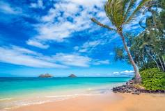

-
Whitehaven Beach, Australia
Located on Whitsunday Island, Whitehaven Beach is famous for its stunning white silica sand and turquoise waters. It's a perfect spot for swimming, sunbathing, and enjoying the natural beauty of the Great Barrier Reef.
-
Grace Bay, Turks and Caicos
Grace Bay is known for its calm, clear waters and powdery white sand. This beach is ideal for snorkeling, diving, and enjoying luxury resorts that line its shore.
-
Baia do Sancho, Brazil
Baia do Sancho, located on Fernando de Noronha island, offers stunning cliffs, vibrant marine life, and crystal-clear waters, making it a paradise for divers and nature lovers.
-
Navagio Beach, Greece
Also known as Shipwreck Beach, Navagio Beach is famous for the rusting shipwreck that rests on its sands. Accessible only by boat, this secluded cove is surrounded by towering cliffs and azure waters.
-
Playa Paraiso, Mexico
Playa Paraiso, located in Tulum, offers pristine white sands and turquoise waters against the backdrop of ancient Mayan ruins. It's a perfect blend of history and natural beauty.
-
Anse Source d'Argent, Seychelles
Anse Source d'Argent is renowned for its unique granite boulders, shallow clear waters, and soft white sand. This beach is perfect for photography, snorkeling, and relaxation.
-
Seven Mile Beach, Cayman Islands
Stretching for seven miles, this beach offers soft coral sand, clear waters, and numerous activities such as snorkeling, paddleboarding, and enjoying beachside restaurants and bars.
-
Bora Bora, French Polynesia
Bora Bora is known for its stunning lagoon, overwater bungalows, and vibrant coral reefs. It's a perfect destination for honeymooners and those seeking luxury and tranquility.
-
Lanikai Beach, Hawaii
Lanikai Beach features powdery white sand and calm, clear waters, making it a favorite for swimming, kayaking, and enjoying the scenic views of the Mokulua Islands.
-
Pink Sands Beach, Bahamas
Pink Sands Beach is famous for its unique pink-hued sand, clear waters, and serene atmosphere. It's an idyllic spot for beachcombing, swimming, and relaxing in paradise.